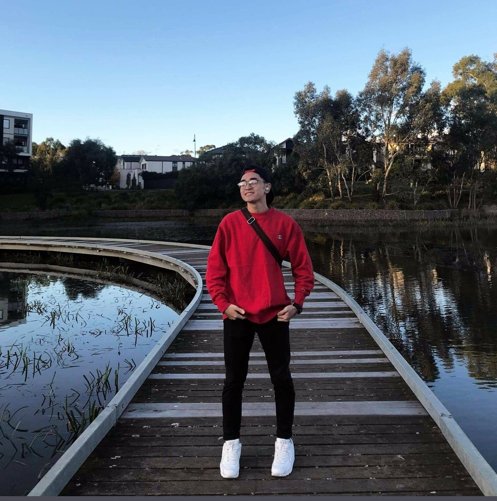

Meet Our Team!
Mitch Taylor - s3915730
After finishing school, I’ve had a long journey of pursuing my interests, from criminal justice to nursing, army reserves to police, paramedicine to electrician, I have decided to start a degree in Information Technology as it’s always been an interest of mine. I’ve been working at Man With a Van for the past three years and hope to start a job where I don’t have to lift heavy things for a living, so IT sounds perfect. I love music (techno, deep house, trance), enjoy playing video games, watching movies and television, and going to the gym.

Dat Nguyen - s3697380
I am currently doing a Bachelor of International Business at RMIT University. I am a transfer student from Vietnam, and I am going to graduate after this semester. I can speak English, Vietnamese, and French. Moreover, I also have a part-time job delivering food in Melbourne City. On the other hand, I used to be a gamer addicted when I spent nearly a day just playing League of Legends, but when I grew up and found that I have a better hobby is playing soccer, and until now I am in the RMIT University soccer team. At the moment, I hope that the Covid-19 pandemic will end soon so I can book a flight ticket to visit my parents.
Jake Porter - s3909096
I am currently 22, graduated high school in 2016 and went straight into studying Engineering at University of Queensland. I did my first year there but did not overly enjoy Engineering and therefore transferred to QUT (Queensland University of Technology), to major in electrical and aerospace engineering.
Unfortunately, I still did not enjoy what I was studying and decided to pick another career path; I followed wrong advice from my career’s counsellor at QUT and did a year of a Bachelor of Justice until I moved down to Melbourne in January of 2021 and took up a Bachelor of IT, hoping to major in cyber security.
During the back and forth of finding a degree I wanted to pursue, I managed to work full time here and there, complete a Certificate 3 in Civil Construction and get work experience in many different industries. I was able to fund many of my hobbies which included building my own computer, anything to do with my cars and visiting as many pubs as possible. I like to think the choice to prioritise work over studying taught me the importance of getting a degree. While the money was good for a short period of time, career progression really became for my future. By 22, I have lived out of home for 4 years, had 5 different cars, been engaged, travelled and experienced things that just wouldn’t be possible if I chose to prioritise study. Beyond all this, I love photography, although I have never pursued it, I have many favourites of my own work which I like to share on Instagram.

Anson Go - s3767707
I am currently studying my bachelor’s degree at RMIT in Melbourne, 3000 VIC, Australia. I was born in 17 September 1998 and finished my high school education in Malaysia. I enjoy reading novels and playing multiplayer battle online games during my free time. I was once a swimming athlete but had to retire to continue my study. My highest achievement is competing in the ASEAN university games. I am interested in cooking, and I am more likely to become a food blogger if not working in the IT industry in the future.
I started my interest in IT as a gamer during primary school. Playing mobile games becomes my hobby ever since my first try. However, the novelty to continue playing a particular game wears off quickly, resulting in me trying a lot of games along the way. After a few try, I had the idea of developing my very own games which suit my aesthetic. Since then, I did some research and found myself interested in the game design and development. The only imperfection is that science subjects are the only focus in our high school education leaving IT a brand new field yet to be discovered and learned later on which much more increases the difficulty of me mastering it.
Vincent Lu - s3896691
I was previously enrolled in the Associate Degree in Information Technology program and I completed my Victorian Certificate of Education in 2020 at Salesian College, Chadstone. I chose to matriculate to the Bachelor of IT degree simply for more choices in electives and a more flexible schedule allowed by the multiple lecture/tutorial sessions offered by Bachelor degrees. A few facts about are: I am of Chinese and Vietnamese descent , as a result of this, I am trilingual being able to speak Cantonese and Vietnamese. In my free time, I like to take my two dogs for walks around the block or take them to dog parks to meet other dogs.
My field of interest in IT is software as the use of software has always played a large role in my life since early childhood, whether it’d be for educational or entertainment purposes. Discovering open-source software, I developed more respect for software developers. This respect has drawn me to aspire to reciprocate the effort put in for the greater community, satisfying me by making tangible difference in the life of end users.